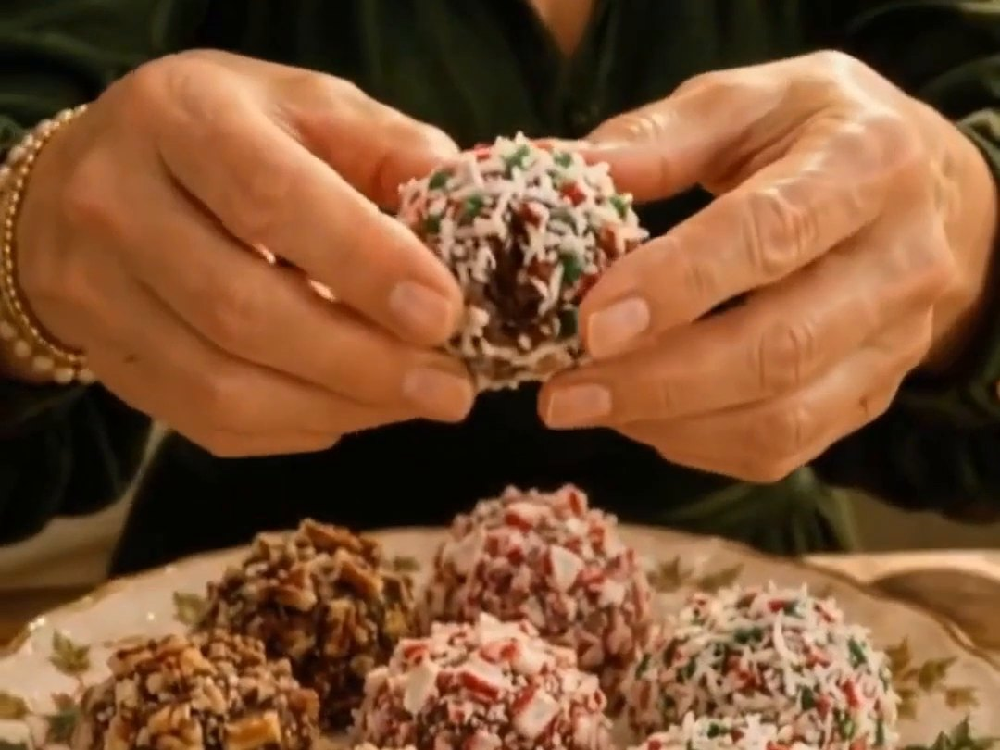
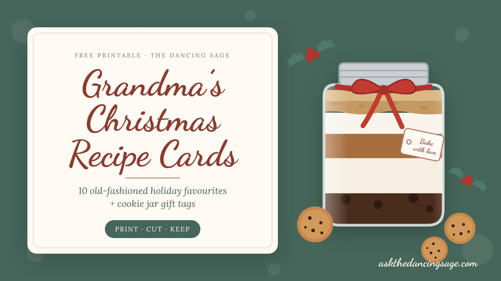

No-bake · Christmas cookie tray
No-Bake Chocolate Snowballs
One batch. Three Christmas treats. A completely unreasonable expectation that they'll last until Christmas. A fudgy chocolate, oat and coconut centre, dressed up in three festive finishes: toasted pecans, crushed candy canes, and coconut with Christmas sprinkles. No oven needed.


FREE: Grandma’s 10 Christmas recipes as printable cardsPrint, cut and keep, or tuck one in a gift. Get them free →Ingredients
- 300 g semisweet chocolate chips
- 1 can (300 mL) sweetened condensed milk
- 2 tbsp butter
- 1 tsp vanilla
- 1½ cups quick oats
- 1½ cups unsweetened shredded coconut
Pick your party outfit
- Finely chopped toasted pecans, cooled
- Crushed candy canes
- Extra shredded coconut mixed with red and green sprinkles
Instructions
- Gently melt the chocolate chips, condensed milk and butter over low heat, stirring until smooth.
- Remove from the heat and stir in the vanilla, oats and coconut.
- Refrigerate until firm enough to scoop and roll.
- Shape into small balls and roll in your chosen coatings. Add the candy cane coating close to serving to keep its crunch.
- Keep refrigerated. Behind the vegetables, if necessary.
A small cookie scoop makes every snowball the same size, and your hands stay a lot cleaner. If the mixture gets soft and sticky while you roll, pop the bowl back in the fridge for ten minutes.
Good to know
Toasting the pecans
Spread the pecans in a dry frying pan over medium-low heat and stir for a few minutes until they smell nutty. Let them cool completely before chopping finely, or they'll melt the chocolate as you roll.
Storing
Keep the snowballs in a covered container in the fridge, with parchment paper between the layers so the coatings don't rub off on each other.
Swaps
Nut allergy in the family? Skip the pecans and do two coatings instead of three. Milk chocolate chips make a sweeter snowball if you have little ones helping.
Questions people ask
Can I make chocolate snowballs ahead for Christmas?
Yes. Make and roll them a few days ahead and keep them in a covered container in the fridge. For the crushed candy cane ones, roll them in the candy canes close to serving, because the candy softens in the fridge.
Why do my crushed candy canes go sticky?
Candy canes draw moisture from the air and from the cold chocolate, so they start to soften and weep after a while. Coat those snowballs on the day you serve them and they stay crunchy.
Can I use rolled oats instead of quick oats?
Quick oats work best because they're small and soak into the chocolate. If you only have large rolled oats, give them a quick pulse in a blender first.
Dress up your Christmas tray
A lovely platter makes everything look beautifully planned. Even when you made them in your slippers.
🎄 Christmas serving platter → 🍪 OXO cookie scoop sets (small, medium and large) → 📜 Reynolds Kitchens parchment paper →Affiliate links. As an Amazon Associate I earn from qualifying purchases.
Adapted from Lois Gill's chocolate coconut snowballs at Stuffed at the Gill's.
🎄 Want more Christmas recipes as pretty printable cards? Get Grandma's Christmas Recipe Cards free.